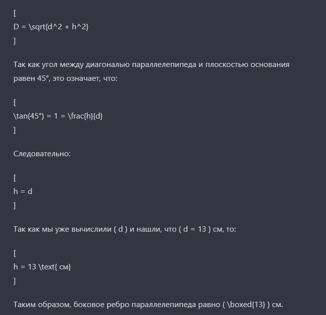
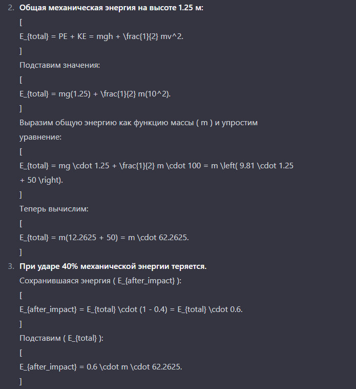
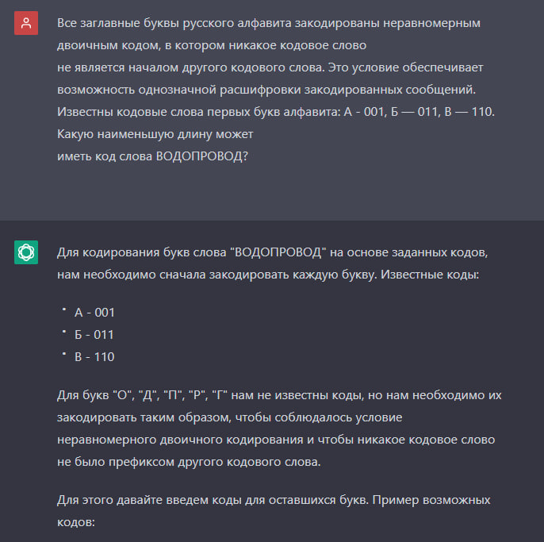
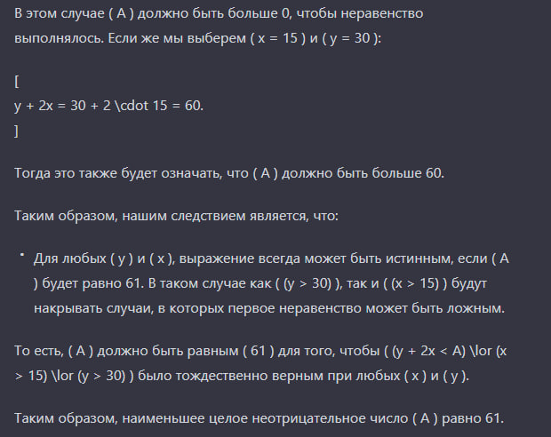

Алгебра
Посмотрим как нейросеть справится с логарифмическим уравнением:
Задание 1.
log5(5-x)=log5(3)
Ответ верный, несмотря на то, как некрасиво выведено решение.✅
Поставим другую задачу. Пусть решит квадратное уравнение.
Задание 2.
6x^2+3x-1=0
Ответ получился, вроде как, верный. Обычный пользователь с трудом может понять это решение, поэтому не засчитаем.❌
Геометрия
Задания по геометрии я брал из учебника 10-11 класса Л.С.Атанасян 2024г.
Задание 1.
Через сторону AD ромба ABCD проведена плоскость ADM так, что двугранный угол BADM равен 60°. Найдите сторону ромба, если
∠BAD = 45° и расстояние от точки В до плоскости ADM равно 4√ 3
Ответ 8√6 неверный.❌
Посмотрим как нейросеть справится со следующим заданием:
Задание 2.
В прямоугольном параллелепипеде стороны основания равны 12 см и 5 см. Диагональ параллелепипеда образует с плоскостью основания угол в 45°. Найдите боковое ребро параллелепипеда.

Ответ верный.✅ (очень не нравится как эта нейросеть выводит решение)
Физика
Задание 1.
С высоты 1, 25 м вертикально вниз бросили шарик со скоростью 10 м/с. На какую высоту после удара он поднимется, если в процессе удара 40% механической энергии шара теряется? Сопротивлением воздуха пренебречь.

Ответ верный.✅
Задание 2.
Определите напряжение на концах реостата, обмотка которого выполнена из железной проволоки площадью поперечного сечения 2 мм?. Масса проволоки равна 1,872 кг. Сила тока, проходящего через реостат, 4 А
Ответ неверный.❌ Какие миллионы вольт!?
Русский язык
Задание 1.
Вставляя, где необходимо, пропущенные буквы, запишите слова в два столбика: а)с ь или ъ; б)без ь или ъ.
Ответ неверный, допущены ошибки.❌
Посмотрим как нейросеть справится со следующим заданием:
Задание 2.
Поставьте глаголы (в составе словосочетаний) в форму 2-го л. ед. ч. и 3-го л. мн. ч. Выделите личные окончания, определите спряжение глаголов.
Допущены ошибки, ответ не принимаем.❌
Информатика
Задание 1.
Все заглавные буквы русского алфавита закодированы неравномерным двоичным кодом, в котором никакое кодовое слово не является началом другого кодового слова. Это условие обеспечивает возможность однозначной расшифровки закодированных сообщений. Известны кодовые слова первых букв алфавита: А - 001, Б — 011, В — 110. Какую наименьшую длину может иметь код слова ВОДОПРОВОД?

Ответ неверный.❌
Задание 2.
Для какого наименьшего целого неотрицательного числа А выражение (y + 2x < A) v (x > 15) v (y > 30) тождественно истинно при всех вещественных значениях х и у?

Ответ верный. ✅
Химия
Задание 1.
Массовая доля углерода в углеводороде равна 0,8889. Его плотность по воздуху равна 1,862. Найдите молекулярную формулу этого углеводорода.
Ответ верный.✅
Посмотрим как нейросеть справится со следующим заданием:
Задание 2.
При окислении этаналя выделилось 2,7 г серебра. Вычислите, какой объём (в литрах) ацетилена потребовался для получения необходимой массы этаналя СН3–СОН (н. у.).